汽车线束的定义
汽车用线束把电流导向汽车各部位的电装部品，将驾驶员的意图传达到车子及外部的方面起到重大作用。
用人体来表示的话，引擎好比心脏，线束相当于汽车内部的神经系统，它是连接所有电器元件的一个总称。
线束是非开模件，柔性件，可塑性高。实际装车状态会与3D数模差距很大。
PSA线束主要分为五大类：
主线束：主要分布于发动机舱和底盘，舱内少部分。
座舱线束：主要分布在舱内。
仪表线束：分布在仪表板内。
发动机线束：分布在发动机上。
小线束：左前门线束、右前门线束、后门线束、顶棚线束、后背门线束、天线线束、前保险杠线束、后保险杠线束、正极电缆、负极电缆。
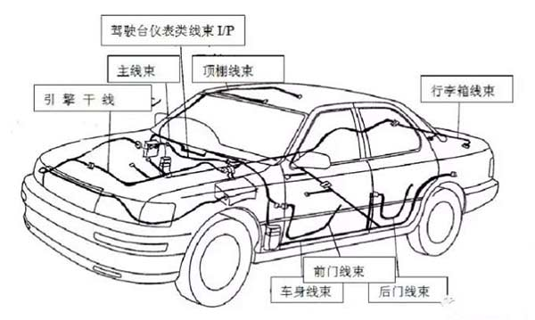
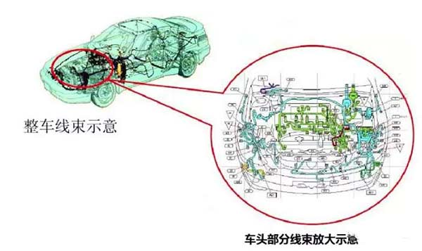
汽车线束的组成：
连接器、端子、电线、定位卡、覆盖物（胶带和管子）、密封件（密封塞和堵头）、 电测标签。
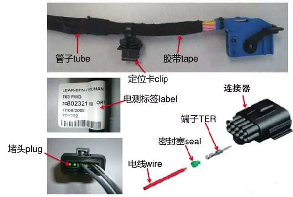
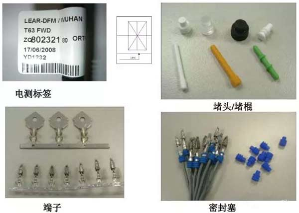
电线、支路
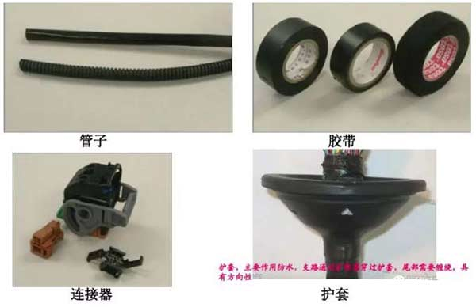
1、电线经过切线机切割压端子，便成为支路。（单根支路，压接支路，铰接支路）
2、电线分为不同的规格，有0.35，0.5，0.8，1.0，1.25，2.0，4.0，6.0，10.0，15.0，25.0等，俗称线径，不同线径的电线具有不同的铜丝股数和绝缘皮外径。线径的大小决定电线的粗细。
3、电线的颜色：分为黑、棕、红、橙、黄、绿、蓝、紫、灰、白、粉等。每个颜色还对应相应的英文字母缩写。
4、电线的线型可分为：B类、C类、H类、G类等。根据耐温强度不一样，可分为T2，T3，T4。
5、电线有一种特殊的，叫屏蔽线，主要作用是防干扰。
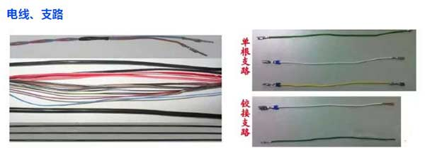
1、环形端子属于特殊端子，一般是用螺栓将它固定在车身上。这类端子有特殊要求。
2、端子也分不带密封塞端子和带密封塞端子。
3、端子的压接分为自动压接和手动压接；手动压接一般压接密封塞端子和特殊端子（打端子，环端等）。
 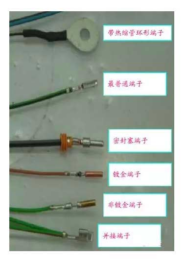
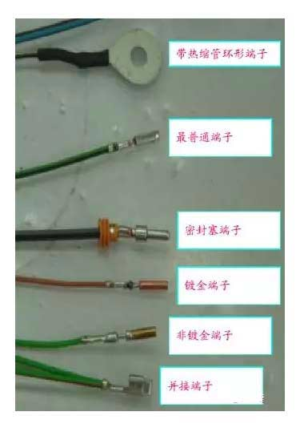
一、端子的主要参数：
1.导体的压接高度、宽度；绝缘层的压接高度、宽度；
2.尖头千分尺测量绝缘层的宽度；游标卡尺测量导体的高、宽度和绝缘层的高度。
二、端子的一个重要特性是拉力值，端子的压接状态必须符合拉力值要求。通过拉力测试仪来测量端子的拉力值。
三、端子的任何一个部位不符合要求，如无毛刷，无窗口，喇叭口过大等，都属于端子变形。
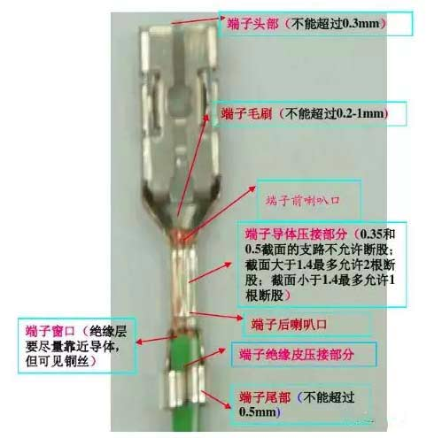
连接器种类繁多，根据不同的要求，可分为防水和不防水两大类。
连接器要通过对接锁止来实现其功能。
与连接器相关的材料有锁止片、盖子、定位夹、扎带等。
 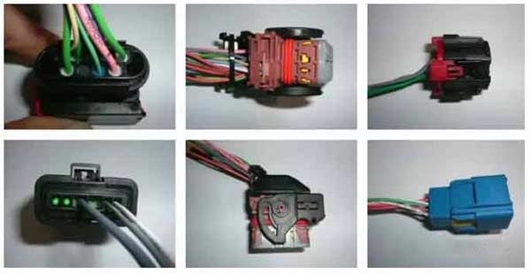
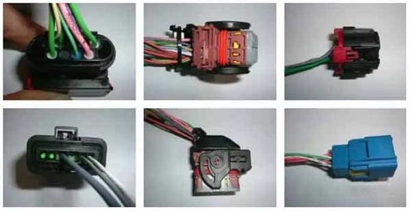
胶带根据耐温等级不一样，可以分为T2，T3，T4的温度等级。汽车线束胶带的种类，点击这里查看，汽车线束胶带的缠绕手法，点击这里查看
根据胶带的材质有PVC、棉质、聚酯、纸胶带等。
胶带规格有9mm、15mm、19mm等。
胶带颜色众多，有黑色、白色、绿色、红色、黄色。
彩色胶带一般用作标识；纸胶带一般用于回折支路和包扎；防水胶带用于粘贴铰接点和特殊所用。
 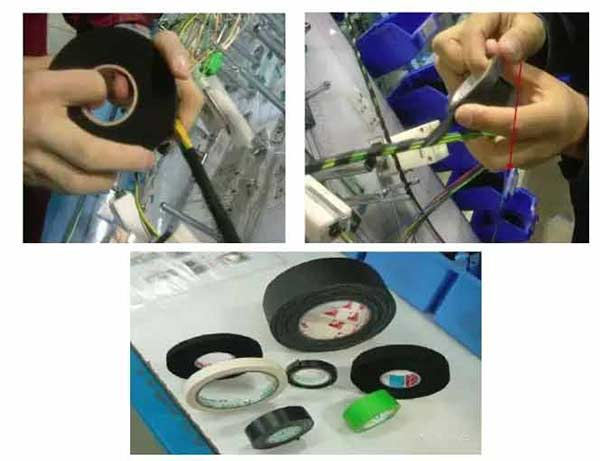
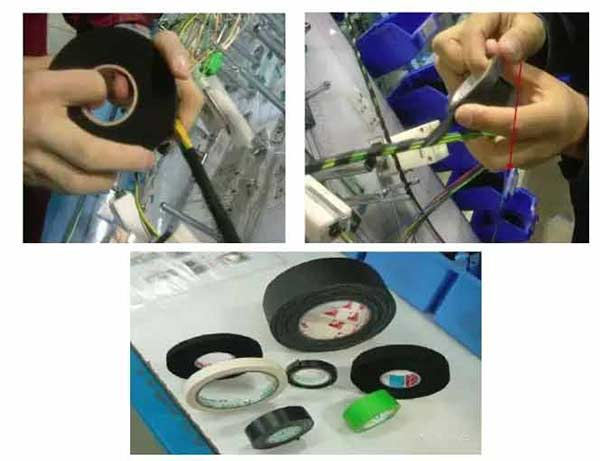
 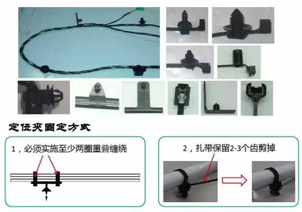
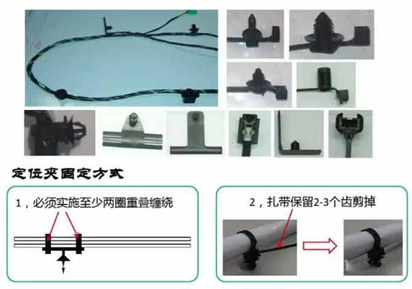
 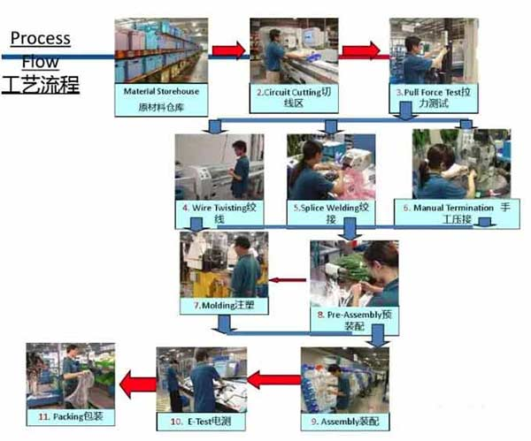
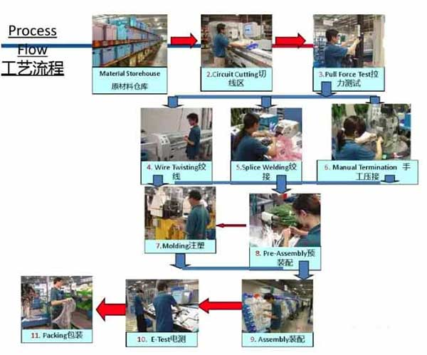
 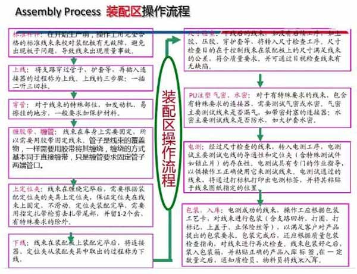
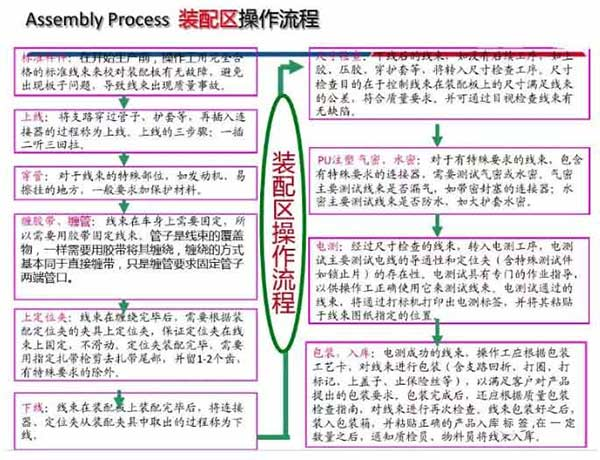
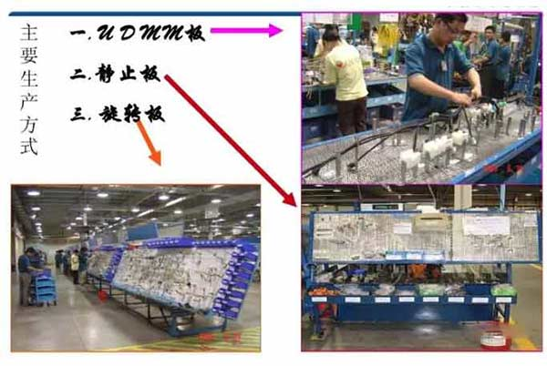
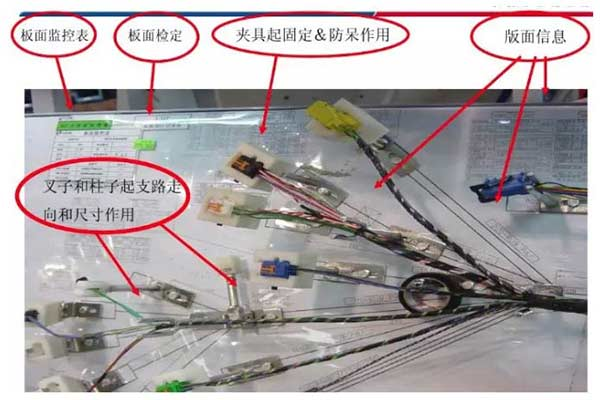
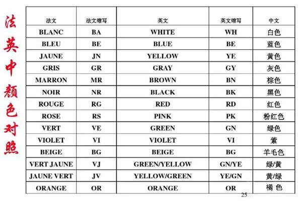
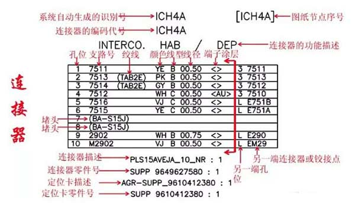
声明：禁止复制或转载本站任何内容！